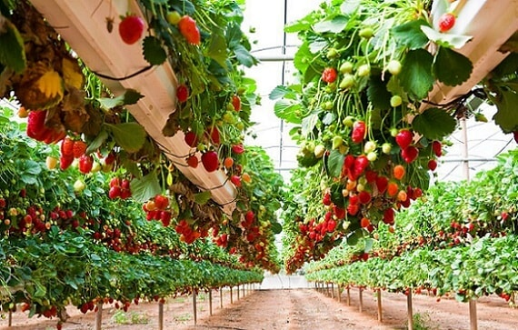
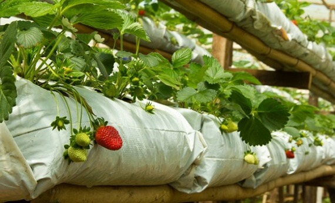
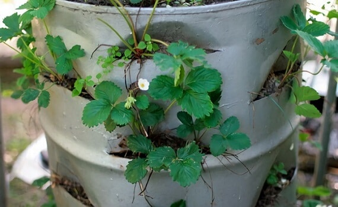
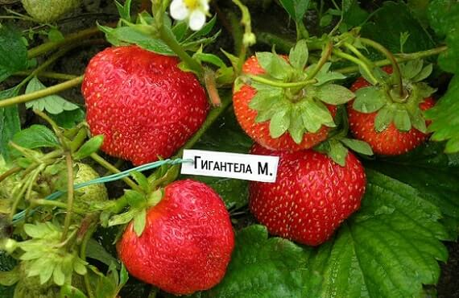

- Открытый грунт или теплицы
- Выращивание в мешках
- Выращивание в бочке
- Финская технология
- Альтернативные технологии
Открытый грунт или теплицы
Один из первых вопросов, который приходится решать каждому начинающему предпринимателю, составляющему бизнес план, это вопрос о том, что предпочтительнее, выращивание клубники в открытом грунте или выращивание клубники в теплице.
Выращивание клубники в открытом грунте обходится дешевле, причем это касается, как необходимых инвестиций, так и текущих расходов. Клубника, выращенная в открытом грунте, отличается неповторимым вкусом, далеко превосходящим вкус тепличной ягоды. На наряду с достоинствами эта технология выращивания клубники имеет также и недостатки. Главными из них являются сезонность и подверженность колебаниям климата. Из-за неблагоприятных климатических условий потери урожая могут достигать 50 и более процентов. К этому следует добавить необходимость борьбы с вредными насекомыми и, следовательно, необходимость применения химических средств их уничтожения.
Выращивание клубники в теплице требует гораздо больших первоначальных вложений. Достаточно сказать, что для оснащения современным оборудованием теплиц на площади в один гектар необходима, как минимум, сумма, эквивалентная 100 000 долларов. К этому следует добавить эксплуатационные расходы, к которым прежде всего нужно отнести затраты на отопление, а также затраты на искусственное освещение и орошение. Кроме того, такая агротехника выращивания клубники требует использования искусственного опыления. При этом, как уже было сказано выше, вкус тепличных ягод уступает вкусу ягод, выращенных в естественных условиях.
Вместе с тем, эта агротехника выращивания клубники имеет ряд серьезных преимуществ. К их числу относятся:
- Возможность выращивать и продавать ягоду круглый год.
- Независимость от климатических условий.
- Высокая прибыльность и быстрая окупаемость бизнеса.
- Меньшее, по сравнению с открытым грунтом, количество земли, необходимой для производства.
Выбор между методиками обусловлен возможностями предпринимателя и конъюнктурой рынка. Большое значение имеет и климатическая зона, в которой предполагается выращивать ягоду. В более северных районах преобладает тепличный способ, в более южных – предпочтение отдается выращиванию в открытом грунте.
Крупные хозяйства, владеющие большими земельными угодьями, зачастую практикуют оба метода. Это позволяет получать свежую ягоду круглый год, выдерживая конкуренцию с сезонным наплывом продукции. Но этим способы выращивания клубники, конечно, не ограничиваются. Выращивание и уход за ней могут очень значительно различаться в зависимости от применяемой методики, причем это относится, как к тепличному способу, так и традиционному.
Выращивание в мешках
Выращивание клубники по голландской технологии или, иными словами, выращивание клубники в мешках позволяет получить большой урожай с небольшой площади. Поэтому для него используются не только дачные участки, эта технология выращивания клубники годится для её разведения на садовой грядке, балконе, гараже или ином подсобном помещении. Уход при этом не представляет особой сложности. Однако при использовании ремонтантной ягоды или сортов, обладающих повышенной урожайностью, требования по уходу ужесточаются. Причем это относится, как к выращиванию клубники на балконе, так и к её выращиванию на грядке или в теплице.
Садовая земляника по этой методике должна высаживаться в мешки, наполненные слабокислым грунтом. Необязательно покупать специальные мешки, вполне годятся обычные мешки из-под сахара или муки. Также мешки вполне можно сделать и самостоятельно, для этого нужно вырезать прямоугольник в полиэтиленовой пленке, затем сложить его и запаять две стороны. Их устанавливают рядами на стеллажах или подвешивают к опорам. Промежуток между ними делается равным примерно 20 см. Необходимо следить, чтобы на м2 приходилось не более трёх мешков, иначе растения будут ощущать нехватку света. Высота такой вертикальной грядки может достигать 2,5 м.
Перед засыпанием смеси на дно мешков нужно насыпать мелкого гравия или керамзита в качестве дренажа. После этого в мешках со всех сторон делаются вертикально ориентированные прорези. Их длина должна быть примерно 8-10 см. Прорези располагаются в шахматном порядке на расстоянии порядка 20 см. Для посадки лучше подходят самоопыляющиеся сорта. В этом случае уход за растениями заключается в их проветривании и регулярном, желательно, капельном поливе.
Чтобы вертикальное выращивание клубники приносило урожай круглый год, используется методика холодного консервирования. Для этого молодые отростки хранятся при температуре 0-2 градуса и влажности 90%. Такой режим останавливает их рост, но не дает погибнуть. Поэтому они круглый год могут использоваться как посадочный материал.
Своеобразным вариантом этой методики является выращивание клубники в трубах пвх горизонтально. В этом случае трубы пвх с просверленными по всей длине отверстиями под рассаду укладываются горизонтально на стеллажи. Сначала в них засыпают дренажную крошку, а затем землю. К середине каждой трубы подсоединяют трубку оросительной системы, после чего высаживают рассаду.
Выращивание в бочке
Выращивание клубники в бочке по своему принципу похоже на выращивание её в мешках. Только вместо мешка используется садовая бочка, деревянная или пластиковая. Для высадки рассады в бочке также прорезаются боковые отверстия, а дно в бочке засыпается слоем гальки или битого камня. Засыпка субстрата, состоящего из смеси земли и торфа, взятых в равной пропорции, производится послойно. Толщина слоя равняется расстоянию между двумя горизонтальными рядами отверстий. После засыпки слоя в соответствующие отверстия высаживается рассада, после чего засыпается следующий слой.
Высаживанием растений в бочке можно обустроить небольшие дачные участки с неплодородной почвой. Впрочем, бочки можно поставить и в теплице, тогда ягода будет у Вас круглый год. Кроме высокой урожайности, к достоинствам выращивания в бочке следует отнести высокую защищённость от вредителей и болезней. Ягода, высаженная в бочке, не нуждается в прополке, поэтому уход за ней не отнимает много времени. Также клубнику в бочке можно выращивать дома или на балконе. Что касается выбора сорта, то для высаживания в бочке лучше всего подходит ремонтантная садовая земляника.
Также очень хорошие результаты показывает ампельная ремонтантная клубника. Эта вьющаяся садовая земляника характеризуется тем, что у неё плодоносящими является не только само растение, но и усы. Ампельная ремонтантная клубника может плодоносить и в условиях недостаточной освещенности, поэтому эта вьющаяся ягода часто разводится на балконе или небольших теплицах. А выращивание клубники дома позволяет круглый год снимать урожай ягод. Следует помнить, что ампельная ремонтантная клубника каждые два года нуждается в пересадке, иначе кусты вырождаются. При этом ампельная ремонтантная клубника должна высаживаться отдельно от других сортов.
Финская технология
Северный климат Финляндии, неблагоприятен для выращивания клубники, а между тем эта страна занимает одно из ведущих мест по её производству. Причем ягода, выращенная по финской технологии, славится своим качеством.
Суть финской методики заключается в использования мульчирования с помощью черной пленки. Для этого в пленке вырезают отверстия в шахматном порядке. Благодаря пленке грядки аккумулируют тепло, что способствует значительному повышению урожайности. Кроме того, пленка препятствует попаданию в них семян сорняков и защищает растения от вредителей. Поэтому уход за ними сильно упрощается, он, фактически, сводится к своевременному поливу. Основные трудозатраты приходятся на подготовительный период, последовательность действий при этом выглядит следующим образом:
- Сначала грядки перекапывают, удаляя сорняки, и рыхлят. Участки, предназначенные для посадки, должны год выдерживаться под паром.
- Затем грядки удобряют компостом или перегноем и оставляют в таком виде на две недели.
- Между рядами на глубине нескольких см закапывают трубы или шланги для полива.
- Затем накрывают грядки пленкой, закрепляют её края, и в отверстия, прорезанные в пленке, высаживают рассаду.
Альтернативные технологии
Выращивание клубники из семян позволяет проконтролировать отбор посадочного материала на всех этапах и избежать вырождения растений. Болезни, перенесенные растениями, при размножении семенами потомству не передаются. Но уход при этом требует дополнительных усилий. Для получения семян отбираются ягоды с самых крепких и плодоносящих кустов. В течение трех месяцев до посева семена должны храниться в увлажненном виде при температуре от 2 до 5 градусов. При этом каждые две недели их необходимо перемешивать. По истечении трех месяцев семена подсушиваются, после этого их можно высаживать.
Пророщенные семена высеваются в бороздки, проделанные в уплотненной смеси с шагом в 2 см. Затем их накрывают стеклом или полиэтиленовой пленкой и ставят на солнечное место. Для обеспечения циркуляции воздуха пленка ежедневно должна сниматься на какое-то время, которое увеличивается по мере роста саженцев.
Ежедневный полив при этом производится с помощью пульверизатора, так как в противном случае семена могут быть вымыты из почвы. Температура воды должна соответствовать комнатной. По мере роста сеженцев уход за ними следует дополнить подкормкой удобрениями, производимой каждые 10 дней. Закалку сеянцев лучше всего производить на балконе при плюсовой температуре.
Метод Кизима назван так по имени его разработчика — Галины Кизима. По методу Кизима клубника сажается в конце мая – начале июня. В качестве посадочного материала используются усы прошлогоднего урожая, на каждом из которых оставляется одна розетка. Для подготовки грядок по методу Кизима следует в августе засеять их белой горчицей, способной отпугивать проволочника и нематоду. После того как ударят первые заморозки, грядки с помощью плоскореза перекапываются на глубину в несколько сантиметров, поливаются Фитоспорином и закрываются темной пленкой. Этот метод повышает устойчивость растений к различным заболеваниям и облегчает уход за ними.
Гигантелла. Уход за разными сортами клубники может иметь столько особенностей, что в каждом конкретном случае может рассматриваться как отдельная технология. Чтобы убедиться в этом, достаточно вспомнить технику выращивания ампельной или ремонтантной ягоды. Это же касается и условий выращивания. Разведение одного и того же сорта на балконе и в теплице может сильно отличаться. Выращивание клубники сорта Гигантелла не является исключением. Оно также имеет ряд серьезных особенностей.
Гигантелла была выведена в Голландии. Она отличается большими, до 100г, плодами и высокими, до 50 см, кустами. Кроме того Гигантелла имеет замечательный вкус и аромат, слегка напоминающий ананасовый. Она хорошо хранится и легко переносит транспортировку. Для её высаживания надо выбирать очень хорошо освещенные участки. Плотность посадки – четыре куста на м2. С одного куста Гигантелла способна приносить плоды в течение 8 лет.
Для сохранения своих качеств Гигантелла требует обильного и частого полива. Ранней весной участки, где будет высаживаться Гигантелла, удобряются калийными удобрениями. На второй год используется аммиачная селитра. На третий год Гигантелла удобряется смесью из равных частей селитры, хлористого калия и суперфосфата. Причем половину удобрений вносят весной, а другую половину осенью, после снятия ягод. При соблюдении требований агрокультуры Гигантелла способна давать стабильно высокий урожай. Кроме того, в этом случае Гигантелла демонстрирует замечательную стойкость к различным болезням.